Define a stronger AI visual language.
I focused on how AI-specific cards, charts, and metrics should feel more unified across the product.
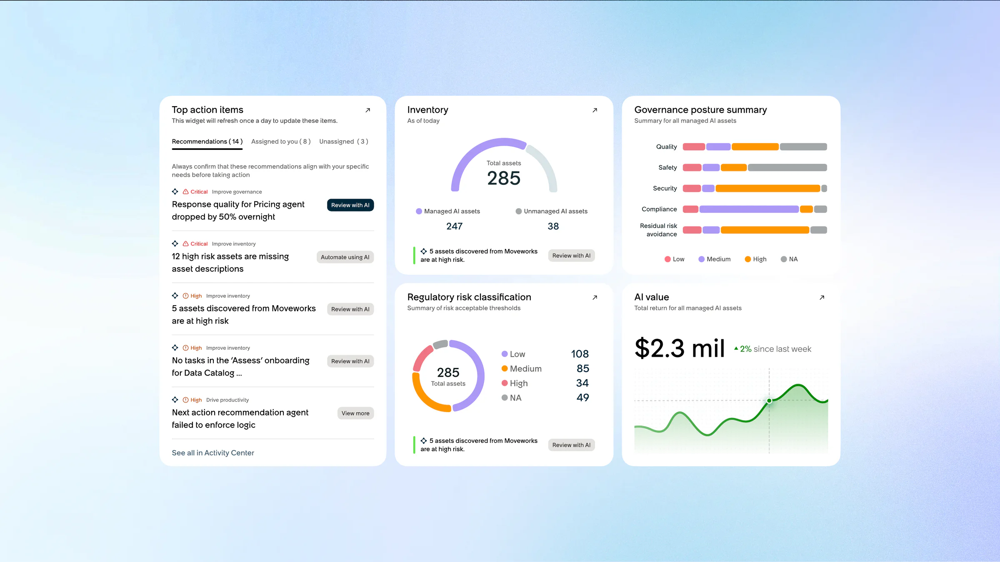
Project / 03
A ServiceNow internship project focused on unifying the AI visual language inside AI Control Tower so governance, inventory, and value signals feel clearer, more recognizable, and more scalable.
AI Control Tower is a centralized dashboard for monitoring AI usage, governance, and performance across enterprise systems. My role was to make the product feel more consistent by building a stronger AI-specific visual language across its most important surfaces.
The work focused less on adding new features and more on sharpening recognition, improving hierarchy, and making dense AI oversight information easier to parse at a glance.
Discuss this project ↗I focused on how AI-specific cards, charts, and metrics should feel more unified across the product.
The priority was better recognition, clearer hierarchy, and more consistent behavior across dense product surfaces.
The work translated directly into visual improvements across key AI Control Tower modules rather than a speculative concept only.
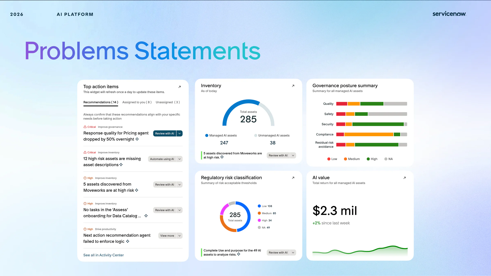
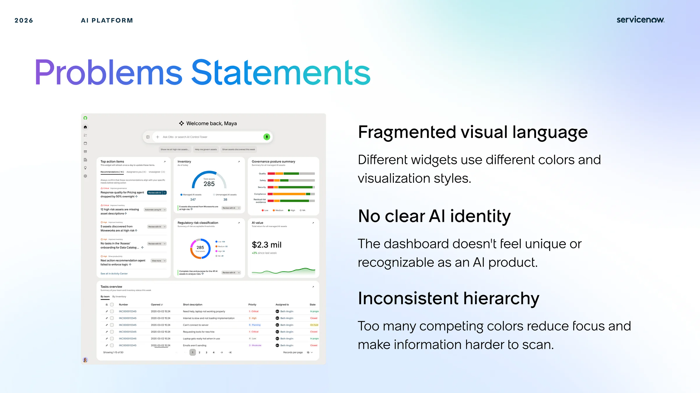
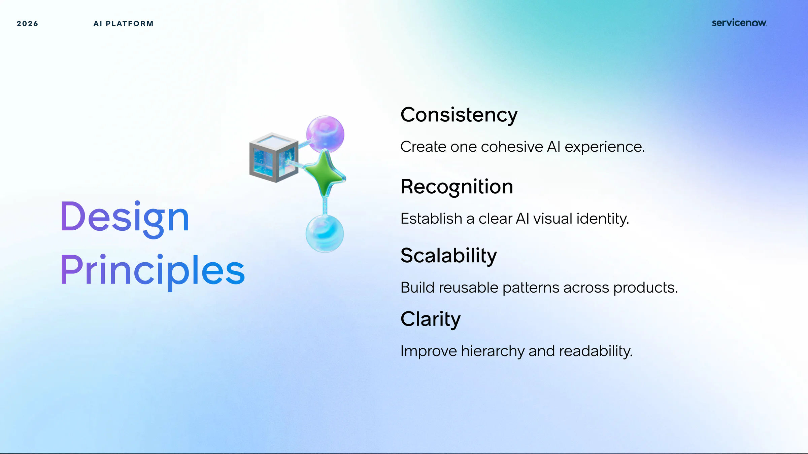
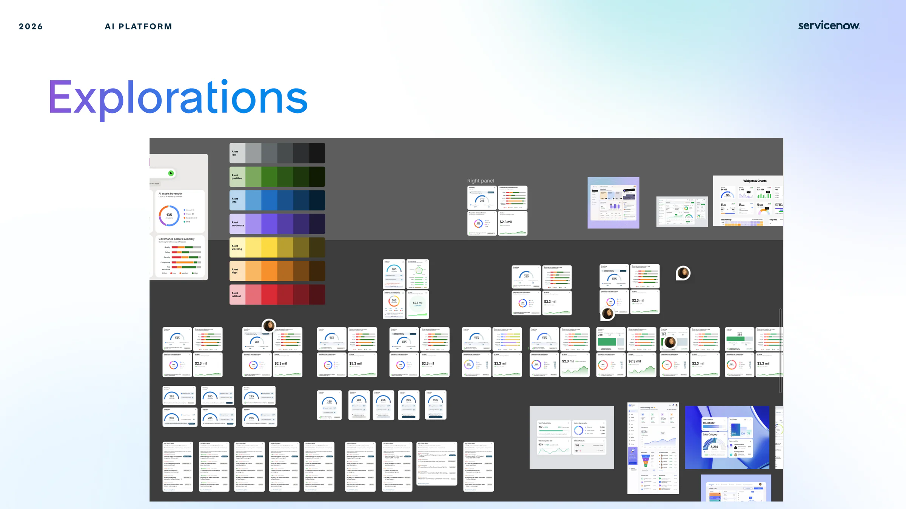
Deliverables
The project translated principles into direct interface changes: cleaner charts, stronger emphasis, clearer state differences, and more consistent visual behavior across dashboard components.
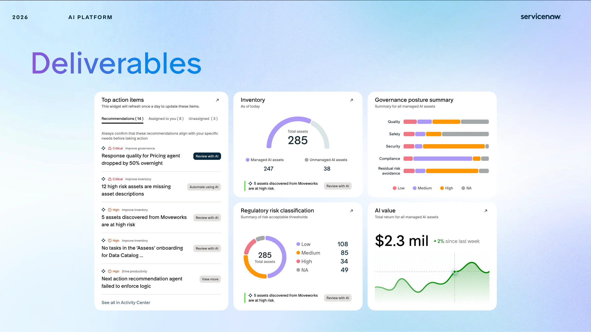
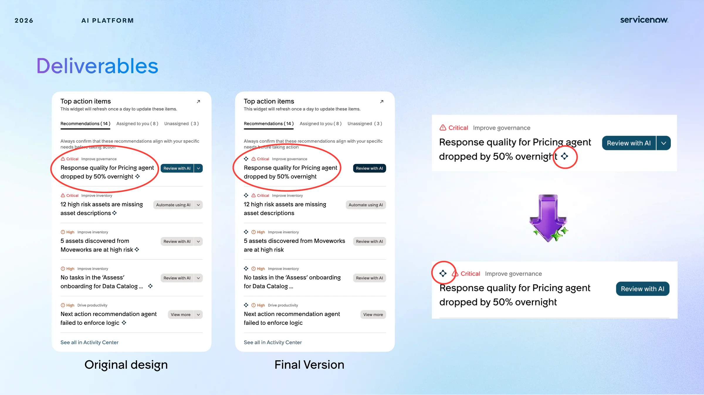
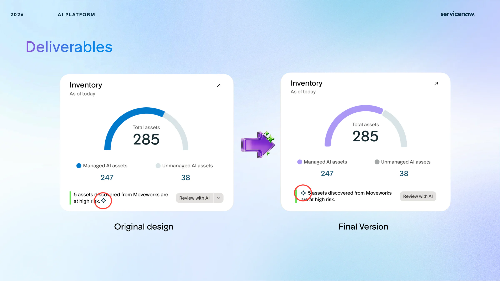
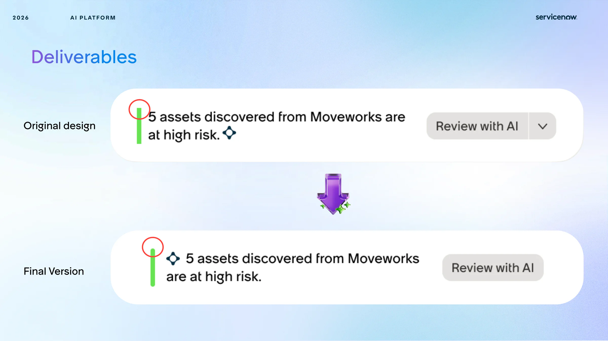
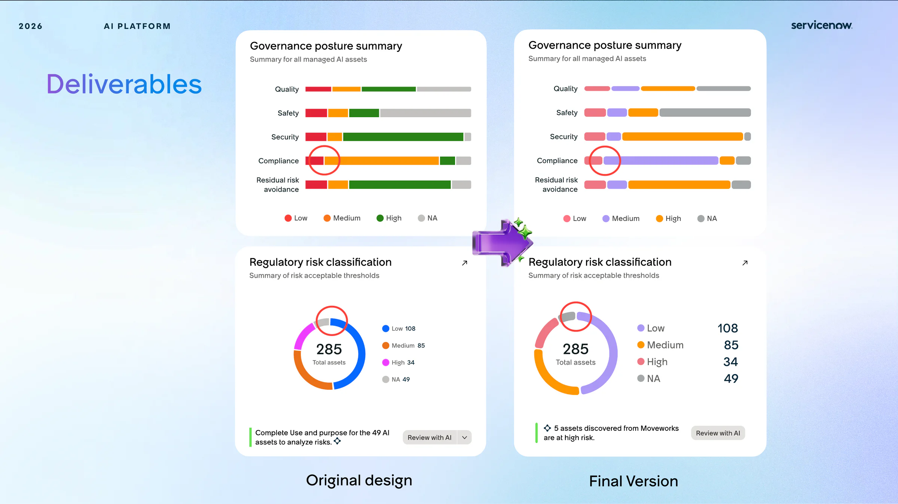
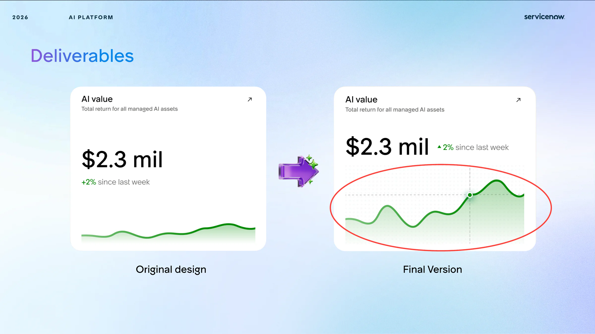
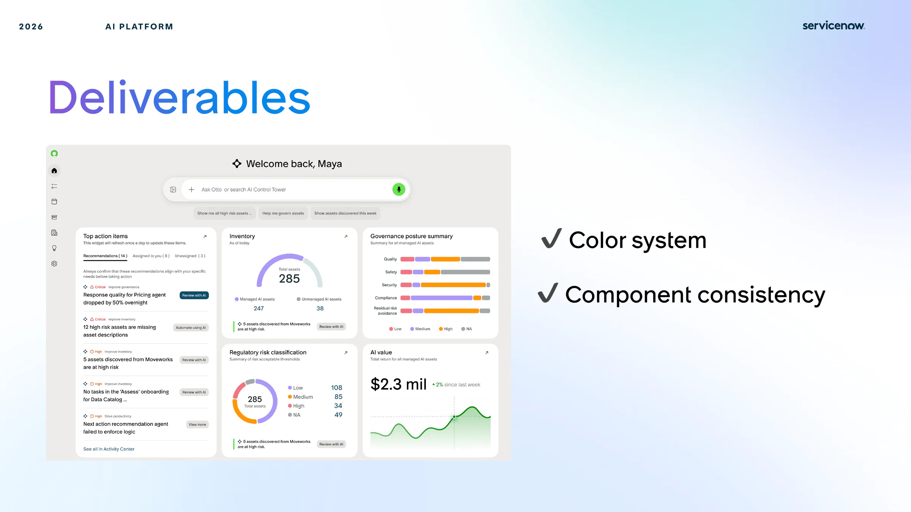
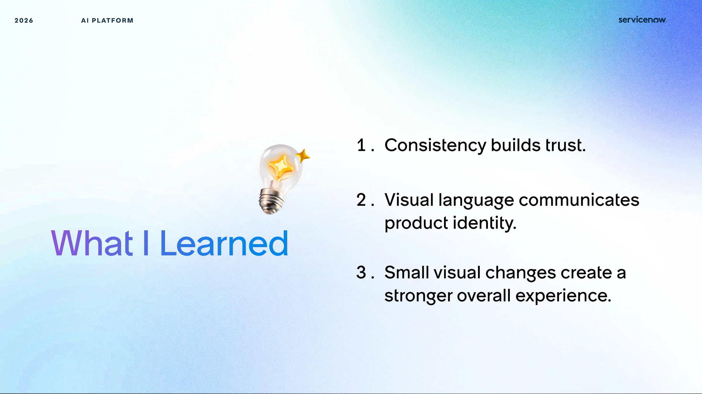